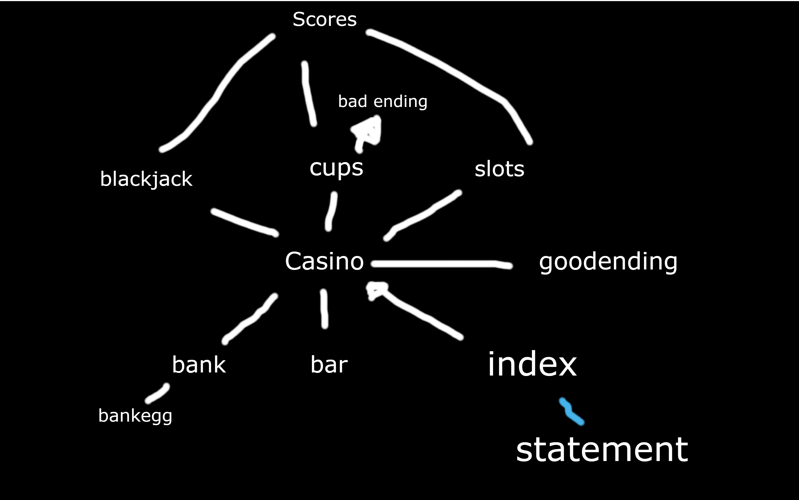

CASINO
2) Choices for Columns A, B, C, and D:
a) Our choice is to make a website that is a kind of game. A home hub casino page with mini casino-based games, which are all rigged by the casino, this game also misdirects the user into a false sense of victory before having it all stripped. Otherwise, this game generally follows most rules and conventions of normal games through casino-based mini-games.
b) The definition that best fits our project is: “To take part in a game for stakes; gamble”, #49 from: https://www.dictionary.com/browse/play
c) The game will reflect on parts of Ian Bogost’s Theory about “The Rhetoric of Video Games”.
d) We will be doing the JavaScript-Oriented Option. Since we are a group of four, we will have to follow those guidelines:
- At least 11 HTML files PLUS index & statement pages = 13 pages.
- Total at least 10 pages that use JS in some way.
- Thoughtfully integrate JavaScript from at least 4 categories out of the List of
JavaScript Categories for A2.
3) Our concept is a casino where the odds are not simply in favour of the casino, but rather it is 100% impossible for the player to win. It consists of three minigames: a blackjack game, a cup game and a slot machine game. All three are rigged to make it impossible for the player to win. Part of our intention is to test the player, to see how long they will try to win before realizing it is simply impossible. This is somewhat of a test of character. Will the player keep trying because of naiveness, or because of thick-headedness? Or will they quickly become wise to the fact that they are playing a losing game? Another of our intentions is to have people find the only reasonable option; to not play at all. In our game, the only reasonable option is to refuse to play and walk away. This way you end up saving your time and money. In the casino, there is also a bank, where you can try to deposit and withdraw money. However it quickly becomes obvious that you are not in control of your own money in this casino, and any interaction with your bank account is blocked by the game. There is also a small easter egg on the bank page, that lets you inspect the inside of the bank machine, revealing that there is no money there. The player has no money, and won’t receive more from the casino that controls it all.
In our game, we are implementing the real-life concept of gambling. We are trying to teach the lesson and make people aware of the impossibility of winning in a playful way. The player also has other interactions typical of a casino such as the bar where the telling can be a bit rude or pushy, suggesting that you drink if you are shy, but then telling you that your drink may be poisoned if you do end up giving in. To reach the worst ending players must find the mouseover hints on the dealers and make a bet of 20$ at the cup game, they are led to believe that this is lucky but in reality, the casino is just looking for a reason to cause you trouble and will accuse you of cheating, and take even more of your possessions.
4. a) cup.html
Index.html
Bank.html
Bankegg.html
Bar.html
Slots.html
Goodending.html
Blackjack.html
Casino.html
Scoreboard.html
b) Slots.html - random images
Cup.html - randInt in a novel way
Bar.html - if statements with different responses to user prompt
Blackjack.html - while loop for the betting system was our own work
5. Sitemap

6. Credit is given to
https://codesandbox.io/s/javascript-beginner-tutorial-blackjack-epegw?from-embed=&file=/src/index.js for some functionality of the blackjack game, the code was used and adapted in order to negate the win conditions and rig the starting hand for the dealer as well as make it so that dealer wins any ties.
7. Other than the code listed above, everything else on this website was made by this group.